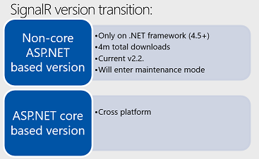
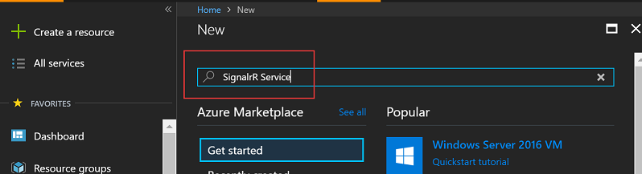
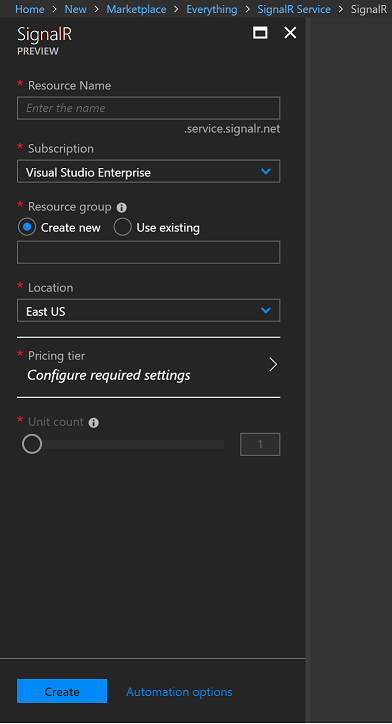
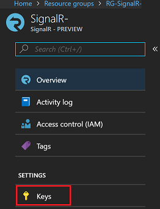
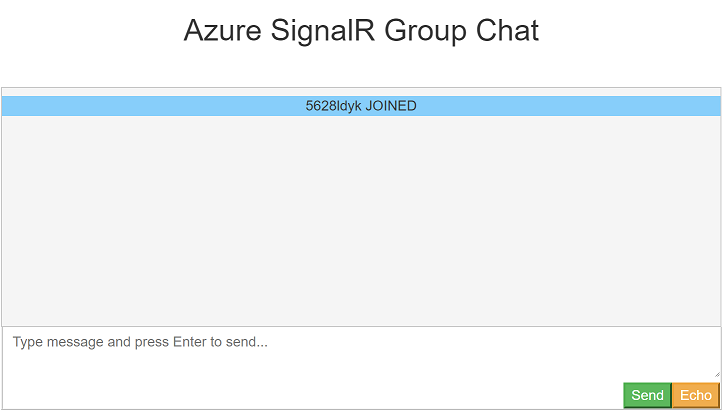
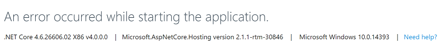
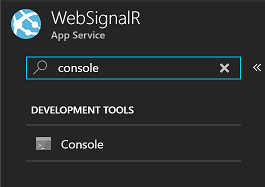
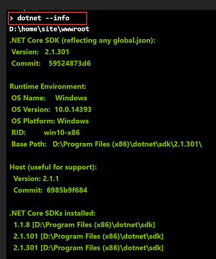
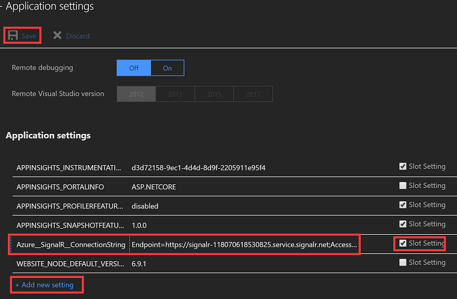

SignalR是五年前开发的一个库，最初是作为ASP.NET namespace下面的一部分。随着ASP.NET Core的推行，也发布到了ASP.NET Core中。但是一直以来，都是作为SignalR SDK的形式出现，必须运行在 ASP.NET或者ASP.NET CORE上面。 微软今年年初在西雅图举行的年度Build开发者大会上宣布了Azure SignalR服务的公开预览。 SignalR支持通过启用服务器和客户端之间的双向通信来实现实时Web功能。 SignalR可作为单独的ASP.NET库下载，而且这是第一次作为完全托管服务提供。我正好有机会参加了内测和公开预览的阶段，赶早尝鲜。 在公开预览阶段，可用的文档比较少。所以，用Azure Web App 上面搭建ASP.NET CORE 应用和SignalR Service的时候踩到了不少坑，这个POST主要聊一下如何在建立类似的项目的时候注意躲坑。
什么是Azure SignalR Service
SignalR是五年前开发的一个库，可用于为Web应用程序（如实时仪表板）提供实时体验。 它通过将内容从服务器端代码实时推送到连接的客户端来实现这一目标。 该功能通过WebSockets提供，但在不支持WebSockets时，可以回退到服务器端事件，永久帧和长轮询。
- ASP.NET SignalR是ASP.NET开发人员的新类库，可以轻松开发实时Web功能。
- SignalR允许服务器和客户端之间的双向通信。 在最初的HTTP请求的时代，服务器不会主动相应客户端。必须由客户端请求服务器来获得相应。SignalR可以让服务器在已连接的客户端可用时，立即将消息推送到已连接的客端上。
- SignalR支持Web套接字，并且可以回退到旧版浏览器的其他兼容技术。
- SignalR包括用于连接管理的API（例如，连接和断开事件），分组连接和授权。
- SignalR取代用户轮询和Ajax long pooling/comet。
微软最近在西雅图举行的年度Build开发者大会上宣布了Azure SignalR服务的公开预览。 SignalR支持通过启用服务器和客户端之间的双向通信来实现实时Web功能。 SignalR可作为单独的ASP.NET库下载，但这是第一次作为完全托管服务提供。

为什么要用Azure Web Apps
使用Azure Web Apps 主要基于下面几种原因：
- 支持多种语言和框架 - 目前Azure Web App 支持 ASP.NET, ASP.NET Core, Java, Ruby, Node.js, PHP, or Python.
- DevOps 优化 - DevOps是一个很热门的词。Web Apps对持续性发布和站点的管理提供了非常多的便利。
- Global scale with high availability. 网站应用比较头疼的问题之一，扩容和高可用性。Web App能够非常方便的scale up和scale out, 仅仅需要通过配置就能做到。
- 能够连接到SaaS 平台以及 on-premises的数据。
- 安全，安全还是安全。
- 应用模板 - 可以通过Mark Place上的模板快速创建网站应用，例如WordPress的博客模板，一键部署。
- 以及各种好处 ….
除了App Service中的Web Apps，Azure还提供可用于托管网站和Web应用程序的其他服务。 对于大多数情况，Web Apps是最佳选择。关键是，其他的几个选择中，Web Apps相对比较便宜。。。
前期准备
- Azure Subcription. 如果你没有的话，创建一个免费账号.
- 安装最新的.NET CORE SDK .
安装最新的.NET CORE SDK
安装最新的.NET CORE SDK
安装最新的.NET CORE SDK
重要的事情说3遍 - 代码可以从AzureSignalR-sample下载。
创建一个SignalR Service Resource
首先要在Azure上面创建一个SignalR Service的资源。
- 登陆到Azure Portal
- 点右上角的 Create a Resource. 在Market Place中搜索 SignalR Service
 - 从搜索结果中选中SignalR Service，点创建。
- Resrouce Name是这个资源的名字。Resource Group，可以选择创建一个新Resource Group，也可以使用已经存在的。Location指的是这个service所在的区域，理论上，把服务器搭在使用者比较近的数据中心会比好。Pricing Tier指的是否付费的模式，目前只有2档，Free和Starndard. Unit Count目前最高限制在10个。等到正式发布以后，这个限制会提高。
 - 选择好以后点击创建。稍等几分钟这个resource就创建好了。
如何找到 Connection String
在我们的Web Applicaiton需要指定 SignalR Service的Connection String。 这个Connection String可以在刚刚创建好的SignalR Service上面找到。
- 打开到创建好的Signal Serivce上。
- 在左侧点击Keys。
 - 里面会有两个Key, 这两个都可以使用，必要的时候可以refresh这些key，会重新生成新的key. 把EndPoint的connection string COPY下来，在Web Apps上面会使用到。
Endpoint=https://_youservice_.service.signalr.net;AccessKey=_KEYVALUESHERE_=;
本地调试
在上传到Azure Web Apps之前，可以先做本地调试，以确保程序的正确性。
代码可以在AzureSignalR-samples上面下载。
这里要说的第一个坑，安装最新的.NET CORE SDK。安装最新的.NET CORE SDK！安装最新的.NET CORE SDK！安装最新的.NET CORE SDK！ 重要的事情说3遍 这么重要的问题，官方github文档上也给出来一段话。基本上，现在处于公开预览的阶段，所以仅仅支持最新的.Net Core版本。将来正式发布之后，据说会兼容到.Net Core 2.0版本。
We have made some changes to Azure SignalR Service Runtime, as well as Service SDK. You have to upgrade to the latest Service SDK to connect to the latest Service Runtime. In the latest Service SDK
- 安装好.NET CORE SDK
- 下载最新的Chatroom Sample Code
- 用Visual Studio Code 打开 这个项目
在Terminal 窗口中执行下面的命令
1
2
3dotnet restore
dotnet user-secrets set Azure:SignalR:ConnectionString "<your connection string>"
dotnet runConnection String 是从Azure SignalR Service上面COPY下来的EndPoint Connection String
_Endpoint=https://_youservice_.service.signalr.net;AccessKey=_KEYVALUESHERE_=;_用浏览器访问http://localhost:5000 就能打开聊天室的界面。用另外一个浏览器打开，就能进入聊天室进行对话了。

发布到Azure Web App
本地调试成功以后，就可以把Chatroom发布到Azure Web App.
首先要创建一个Web Apps，作为发布这个应用的地点。 如果使用Visual Studio 2017 进行程序开发。创建Web Apps和发布可以一次性通过VS 2017做完。—-> 看这里的传送门
如果是使用Visual Studio Code, 需要分两步走。
- 首先在portal上面创建一个Web Apps instance. —-> 对方打开了一个传送门
- 然后使用Visual Studio Code 发布到Web App. —->第二扇传送门
这里主要躲坑的地方，因为Chatroom是基于.Net Core 2.0的版本， 所以发布到Web App上的需要选择对应的framework. 如果通过Visual Studio 2017 创建并且发布Chatroom 可以略过这个问题。如果是自己创建的Web Apps Instance，就需要注意避坑。如果framework版本不对的话，可能会遇到下面的错误。

确认Web App的.Net Core Framework的版本信息可以通过下面的步骤做到。
- 登陆到Azure Portal. 打开到创建好的Web Apps 上。
- 在左侧导航栏上方的搜索栏上面搜索console. 点击Console.
 - 如果环境配置正确的话，会看到类似的信息。

在Web Apps配置SignalR Service的连接字符串
在开发的环境中，SignalR Service的连接字符串是用命令行通过user-secrets将
1 | dotnet user-secrets set Azure:SignalR:ConnectionString "<your connection string>" |
这个命令使用了user-secrets的工具帮助加密SignalR Connection String. 这样一来，connection string 就不会明文的保存在配置文件中。当你使用这个命令的时候，这个键值事实上是被保存到了 %APPDATA%\microsoft\UserSecrets\<userSecretsId>\secrets.json. 的位置。由于这个connection string并不在项目的配置文件中，当你使用上述的方法去发布到Web Apps的时候，这个键值并不会被同步到Web Apps上面。这里也是一个比较坑的地方。因为这里没有同步上去，Chatroom能够显示出来一个静态页面，事实上后台的功能是无法工作的。这就是我们通常遇到的问题 – 我的开发环境明明是好的啊，为什么到了你这里就不行，一定是你环境有问题。 是的，这确实是发布好以后的环境没配置正确的问题。
躲坑技巧。在发布好Web App之后，可以手工配置这个Conneciton String.
- 打开到创建好的Web Apps。在左侧搜索栏搜索Application settings.
- 点击Application settings.
下拉到Application settings， 在这里点”Add”, 增加下面的键值.
1
2Azure__SignalR__ConnectionString
Endpoint=https://_youservice_.service.signalr.net;AccessKey=_KEYVALUESHERE_=;注意将右侧的slot setting勾上。点”Save”进行保存。

到目前为止，整个Web Apps就发布成功了。在Web Apps上面找到Web Site的地址，就可以把这个地址分享给其他的朋友，通过在浏览器上面直接访问可以使用。
Sonic Guo